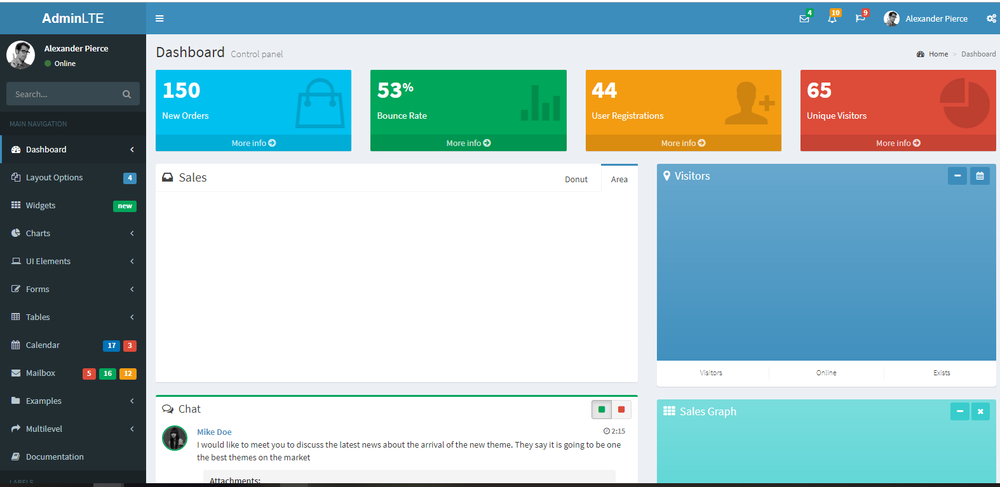
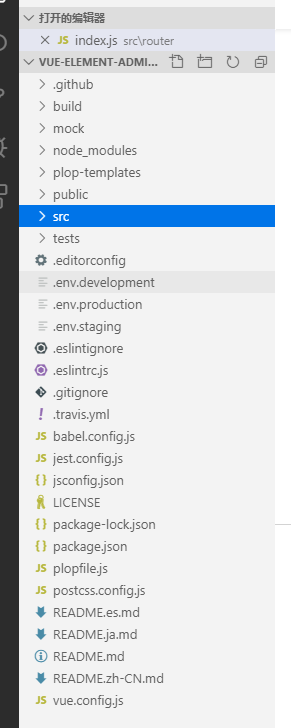
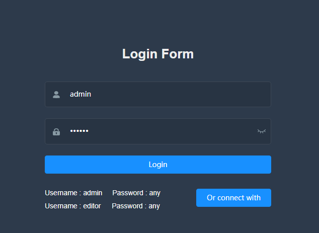
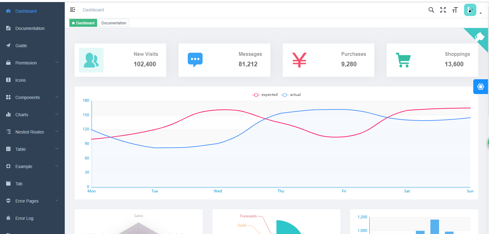
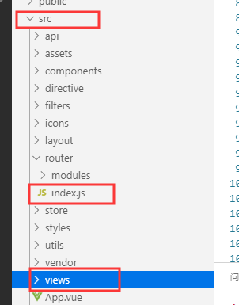
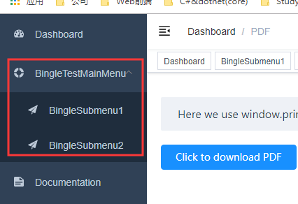

新开发的一个后台管理系统。在框架上，领导要用AdminLTE这套模板。这个其实很简单，把该引入的样式和js文件引入就可以了。这里就不多赘述了。有兴趣的可以参考：https://www.jianshu.com/p/e80b1f5001eb，或者可以参考官网：https://adminlte.io/
效果图，如下：

AdminLTE这个模板，还是很方便的。有兴趣的大家可以自行去琢磨。我只是把这个模板内嵌到新系统中去，也就没多去研究了。
AdminLTE这个就告一段落。下面来说说今天的主题，Vue+ElementUI的后台管理框架。
Vue+ElementUI的后台管理框架
首先我们要先了解，什么是Vue？Vue官网：https://cn.vuejs.org/
Vue官网中对Vue的解释：
Vue (读音 /vjuː/，类似于 view) 是一套用于构建用户界面的渐进式框架。与其它大型框架不同的是，Vue 被设计为可以自底向上逐层应用。Vue 的核心库只关注视图层，不仅易于上手，还便于与第三方库或既有项目整合。另一方面，当与现代化的工具链以及各种支持类库结合使用时，Vue 也完全能够为复杂的单页应用提供驱动。
那什么是ElementUI？
据听说是饿了么公司开发的一套UI组件，具体的我也不太清楚，这是ElementUI中文官网：https://element.eleme.cn/#/zh-CN
在官方文档上，ElementUI给出了其设计原则：
1、一致 Consistency
与现实生活一致：与现实生活的流程、逻辑保持一致，遵循用户习惯的语言和概念；
在界面中一致：所有的元素和结构需保持一致，比如：设计样式、图标和文本、元素的位置等。
2、反馈Feedback
控制反馈：通过界面样式和交互动效让用户可以清晰的感知自己的操作；
页面反馈：操作后，通过页面元素的变化清晰地展现当前状态。
3、效率Efficiency
简化流程：设计简洁直观的操作流程
清晰明确：语言表达清晰且表意明确，让用户快速理解进而作出决策
帮助用户识别：界面简单直白，让用户快速之别而非回忆，减少用户记忆负担。
4、可控Controllability
用户决策：根据场景可给予用户操作建议或安全提示，但不能代替用户进行决策；
结果可控：用户可以自由的进行操作，包括撤销、回退和终止当前操作等。
这些都在官网上有介绍。
vue-element-admin 是一个后台前端解决方案
既然这个是基于Vue+ElementUI开发的，所以Vue的一些前端准备还是需要的，可以在之前的随笔中去查看，点击这里
中文官方帮助文档https://panjiachen.gitee.io/vue-element-admin-site/zh/guide/
vue-element-admin 是一个后台前端解决方案，它基于 vue 和 element-ui实现。它使用了最新的前端技术栈，内置了 i18 国际化解决方案，动态路由，权限验证，提炼了典型的业务模型，提供了丰富的功能组件，它可以帮助你快速搭建企业级中后台产品原型。
这个项目的定位是后台集成方案，不太适合当基础模板来进行二次开发。因为本项目集成了很多你可能用不到的功能，会造成不少的代码冗余。如果你的项目不关注这方面的问题，也可以直接基于它进行二次开发。
安装Git和下载Demo
到这个地址 https://git-scm.com/download/win去下载并且安装Git
下载好Git之后，就可以从Git上拉去代码了
git clone https://github.com/PanJiaChen/vue-element-admin.git
或者，直接在Git上下载压缩包也是可以的https://github.com/PanJiaChen/vue-element-admin.git
下载下来，项目的目录结构就是这个样子

安装依赖：
npm install建议不要用 cnpm 安装 会有各种诡异的bug 可以通过如下操作解决 npm 下载速度慢的问题
npm install --registry=https://registry.npm.taobao.org首先要确保自己电脑上又安装了Node.js的环境。可以自行去官网上去下载。
本地开发，启动项目
npm run dev如果前面步骤都正确，就可以看到如下界面：

登录进去就可以看到如下界面：这个界面还是挺漂亮的

路由和配置左侧菜单
什么是路由呢？可以参照下官方的解释：https://router.vuejs.org/zh/guide/#html
路由允许我们通过不同的 URL 访问不同的内容。该 URL 可以是我们自己设置的,在项目中并没有这样的文件夹,这种功能就是路由.
路由的本质是hash值!
vue 中的路由设置分为四步曲 :
定 : 定义路由组件
配 : 配置路由
实 : 实例化路由
挂 : 挂载路由
用 Vue.js + Vue Router 创建单页应用，是非常简单的。使用 Vue.js ，我们已经可以通过组合组件来组成应用程序，当你要把 Vue Router 添加进来，我们需要做的是，将组件 (components) 映射到路由 (routes)，然后告诉 Vue Router 在哪里渲染它们。

路由放在src->router->index.js中，还有一个views文件夹，当然是放这些页面的啦~
首先，我们要了解一些这个项目中配置路由时提供了哪些配置项
//当设置 true 的时候该路由不会再侧边栏出现 如401，login等页面，或者如一些编辑页面/edit/1
hidden: true // (默认 false)
//当设置 noRedirect 的时候该路由在面包屑导航中不可被点击
redirect: 'noRedirect'
//当你一个路由下面的 children 声明的路由大于1个时，自动会变成嵌套的模式--如组件页面
//只有一个时，会将那个子路由当做根路由显示在侧边栏--如引导页面
//若你想不管路由下面的 children 声明的个数都显示你的根路由
//你可以设置 alwaysShow: true，这样它就会忽略之前定义的规则，一直显示根路由
alwaysShow: true
name: 'router-name' //设定路由的名字，一定要填写不然使用<keep-alive>时会出现各种问题
meta: {
roles: ['admin', 'editor'] //设置该路由进入的权限，支持多个权限叠加
title: 'title' //设置该路由在侧边栏和面包屑中展示的名字
icon: 'svg-name' //设置该路由的图标
noCache: true //如果设置为true，则不会被 <keep-alive> 缓存(默认 false)
breadcrumb: false // 如果设置为false，则不会在breadcrumb面包屑中显示
}所以，我们只需要在路由中对应的位置加上自己的菜单选项就可以了
{
path: '/bingle',
component: Layout,
redirect: '/bingle/index',
name: 'bingle',
meta: {
title: 'BingleTestMainMenu',
icon: 'example'
},
children: [
{
path: 'bingle',
component: () => import('@/views/dashboard/index'),
name: 'bingle',
meta: { title: 'BingleSubmenu1', icon: 'guide', noCache: true,affix: true }
},
{
path: 'bingle1',
component: () => import('@/views/dashboard/index'),
name: 'bingle2',
meta: { title: 'BingleSubmenu2', icon: 'guide', noCache: true,affix: true }
}
]
},这时就可以在菜单栏看到自己增加的菜单项了。
